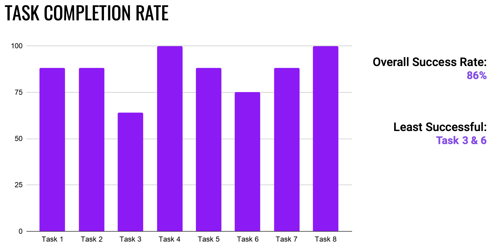
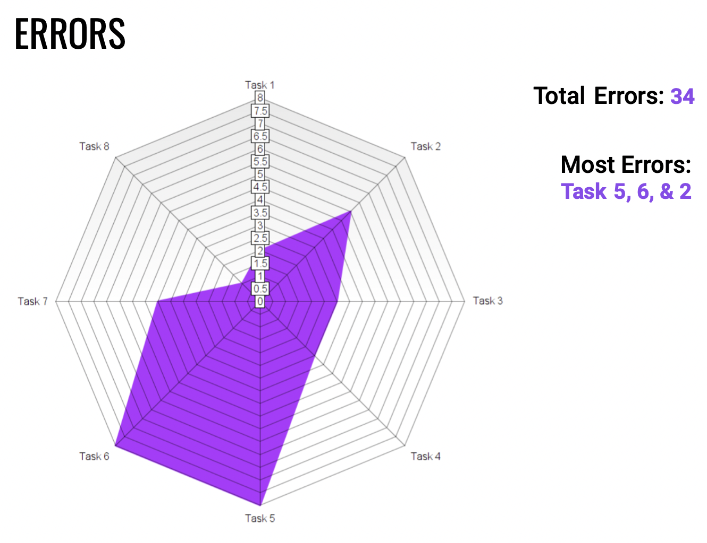
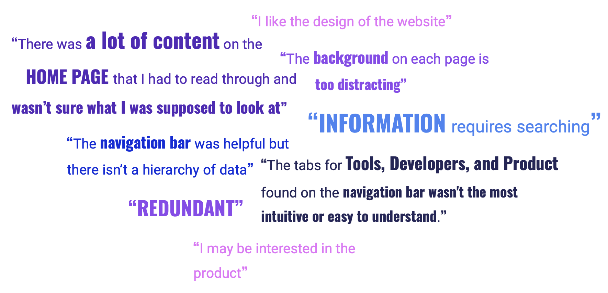
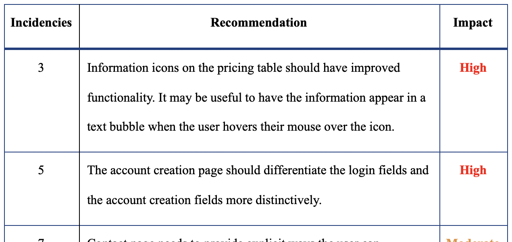

Interhaptics is a software company that specializes in haptics and interaction feedback for virtual reality (VR), augmented reality (AR), and extended reality (XR). Their software is used in video games, mobile phones, demonstrations, and training materials. The company sells licenses or “seats” to their software.
Currently, Interhaptics has mid-low UX maturity, with UX processes undergone by individuals and with unpredictable UX process changes. The company reached out to me and my team because they wanted to evaluate their website. Their goal was to facilitate prospective customer engagement through video demonstrations and community engagement.
My team developed and underwent a collective expert review on the company’s website, then the group prepared screeners, scenarios, and tasks for potential participants for a usability study. On April 12th, 2021, Interhaptics released a soft launch of the third version of their website. The usability test sessions took place April 13th-18th, 2021, while changes were still happening. This project was free of charge, and in exchange, the team requested that the company would let us publish our findings as a portfolio piece.
Testing
An informal formative usability test was conducted on the Interhaptics website with eight participants who either work with or are interested in the use of haptics. A scenario was presented to the participant followed by eight tasks involving primary use cases of the Interhaptics website.
Conditions
Because the product is software used on a computer or a mobile device, the use environment for the Interhaptics website is any place that an individual can access the internet. For this usability test, participants used personal computers, which consisted of seven desktops and one laptop. The participants used a variety of browsers, including two Safari, four Chrome, one Brave, and one Mozilla. The test took place in home offices with relatively quiet surroundings over Zoom.
Objective
The objective of the usability tests was to evaluate the usability of the features of the Interhaptics website with users who fit the model of Interhaptics’ clientele. Testing results were used to determine which features on the website can be improved to increase usability. The strategic business goals aligned to the Interhaptics brand remain the same:
- Provide an ideal presentation of Interhaptics’ products
- Maximize the rate of visitors to the website
- Increase the conversion rate from visitor to customer
- Validate the effectiveness of Interhaptics’ brand
- Alongside these high-level goals, the study attempts to answer the following:
Is the current website more intuitive than the previous version?
- Does the Interhaptics website provide enough information to make its target audience understand the benefits of the brand?
- How easily can customer service be contacted for additional product information and support?
- What are the usability barriers on the website when attempting to convert visitors into customers?
Participants
Each group member moderated two sessions with individuals. A total of eight participants were used for the study. Testing was scheduled from April 11 to April 18, 2021 across different time zones. Participants ranged in expertise from experienced developers to casual gamers with an interest in VR and haptics.
| Demographics | Percentage |
|---|---|
| Male | 75% (6/8) |
| 21 to 30 years-old | 62.5% (5/8) |
| United States | 75% (6/8) |
| VR/XR/AR developer | 75% (6/8) |
| Follows VR/XR topics on Youtube | 62.5% (5/8) |
| Chrome | 50% (4/8) |
Table 1 Study demographics
Sessions
The group prepared a screener using Qualtrics which asked background questions relating to game and mobile development, haptics research, and overall VR/XR experience. The group compiled a list of prospective people found on social media and through personal connections, and then sent them the link to the survey. A total of nine individuals filled out the survey and provided their availability for testing. All respondents, except one, were asked to participate in the website assessment and were sent a consent form to sign before their session. Each session was recorded over Zoom and lasted between 30 and 90 minutes. During the session, the moderator provided background on the study and asked the participant a series of background questions (see Appendix A). Participants were given a scenario and were instructed to perform eight tasks. Each task was sent over chat so the participant could read it.
The group set a maximum standard of seven minutes per task to allow for successful task completion. Participants were asked to think out loud while performing the tasks. After each task, the moderator asked the participant a series of questions about their experience with the task. When all eight tasks were completed, the participant was asked a series of questions about their overall impressions of the website. A post-test questionnaire was sent to each participant at the end of the session.
Scenarios and Tasks
Participants were given a scenario before the start of the test. Questions remained the same for all participants. Each participant was asked to complete the following tasks (see Appendix A for descriptions of scenarios/tasks):
- Explore the Home page
- Find and learn about Interhaptics’ products
- Find documentation that provides more information on the products
- Find the subscription that best suits your needs as a customer
- Create an account
- Locate and access the company’s social media links
- Find the tutorial that shows how to implement haptics
- Contact a sales representative
Metrics
The following metrics were measured during the test, with an additional post-study questionnaire that measured subjective measures of perceived ease of use and usefulness.
| Metric ID | Metric Name | Instrument |
|---|---|---|
| Objective Metrics | ||
| OM1 | Task performed within benchmark time | Cronometer |
| OM2 OM2.1 OM2.2 | Number of errors per task Blocking errors Non-blocking errors | Observer(s) Notes and Recordings |
| OM3 | Moderator prompts per task | Observer(s) Notes and Recordings |
| OM4 | Fail/Success rate per participant and task | Observer(s) Notes and Recordings |
| Subjective Metrics | ||
| SM1 | Perceived comfort of use | Session Debriefing |
| SM2 | Overall experience | Session Debriefing |
| SM3 | Subjective obstacles encountered | Session Debriefing |
| SM4 | Intent to subscribe to Interhaptics’ newsletter | Session Debriefing |
| SM5 | Perceived usefulness | Post-study questionnaire |
| SM6 | Perceived ease of use | Post-study questionnaire |
Table 2. Metrics breakdown
Results
Data was collected through Zoom usability sessions, a set of debriefing open questions, and an adapted questionnaire, which was answered by participants after the sessions ended.
The first metric we used was Task Completion Success Rate, where each task was either deemed a success or failure depending on wether the participant was able to reach the screen that contained germane information related to the task at hand in the time we had allocated for each task.
Figure 1. Task completion rate
We also calculated the overall presence of errors while completing each task, such as going to an incorrect page, or bugs found on the site.
Figure 2. Errors
The results of the post-screening questionnaire were aggregated in mean values per statement.
| 1 | 2 | 3 | 4 | 5 | Mean | ||||
|---|---|---|---|---|---|---|---|---|---|
| PERCEIVED USEFULNESS | |||||||||
| 1 | Using the site, I was able to find information quickly | Disagree | 1 | 2 | 4 | 1 | Agree | 3.5 | |
| 2 | Using the website, there was enough information available | Disagree | 1 | 1 | 2 | 4 | Agree | 4.1 | |
| 3 | Using the website, there is enough information to make each of the different personas understand the benefits of Interhaptics? | Disagree | 1 | 3 | 4 | Agree | 3.4 | ||
| 4 | Using Interhaptics’ products would enhance my effectiveness on the job | Disagree | 1 | 3 | 4 | Agree | 3.4 | ||
| 5 | Implementing haptics to my software would make it easier to do my job | Disagree | 2 | 4 | 2 | Agree | 3 | ||
| 6 | I would find Interhaptics’ products useful in my job | Disagree | 1 | 3 | 3 | 1 | Agree | 3.5 | |
| PERCEIVED EASE OF USE | |||||||||
| 7 | Learning to operate the website was easy for me | Disagree | 1 | 2 | 1 | 4 | Agree | 4 | |
| 8 | I find it easy to get the website to do what I want it to do | Disagree | 2 | 1 | 4 | 1 | Agree | 3.5 | |
| 9 | My interaction with the website was clear and understandable | Disagree | 1 | 2 | 1 | 4 | Agree | 4 | |
| 10 | I found the website to be flexible to interact with | Disagree | 1 | 4 | 2 | 1 | Agree | 3.4 | |
| 11 | It would be easy for me to become skillful at using the website | Disagree | 2 | 3 | 3 | Agree | 4.1 | ||
| 12 | I found the website easy to use | Disagree | 1 | 3 | 2 | 2 | Agree | 3.6 |
Table 3. Aggregate of post-study questionnaire results
Lastly, interviews were coded and discussed among the team, and contrasted to what we all found during our individual and collective expert reviews.
A word cloud of some outstanding quotes
Communicating Results
At the end, the team put together a document detailing the methodology, findings and recommendations. Recommendations were put together in a table, sorted by Impact. Alongside this table, we also detailed each recommendation, using reference images, GIFs, and text descriptions.
Excerpt of the table of recommendations we provided Interhaptics' team
Learnings
This project was extremely useful in my professional development, as it was the first time I did a strict Usability Test, I took the roles of UX researcher, facilitating usability sessions, discussing and analyzing findings, as well as crafting a meaningful test plan. I had previous experience doing Expert Reviews, but using a different format and being able to craft one with a team helped me summarize my observations, defend arguments for keeping or deleting some items, and looking at the website from different perspectives, not just through a developer or as a interaction designer.
Finally, but not least important, I also had the chance to help Interhaptics, being a part of their internal processes, and meeting with them when possible, which was a challenge due to timezone, language and cultural differences. Overall, working with them was a great learning opportunity for improving my soft and hard skills.